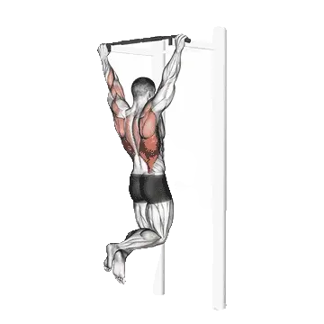

中級の平均レップ数
平均的な中級者の目安です。
男性
14
女性
6
懸垂 平均レップ数
| レベル | ||
|---|---|---|
| 基礎 | < 1 | < 1 |
| 初級 | 5 | < 1 |
| 中級 | 14 | 6 |
| 上級 | 25 | 15 |
| プロ | 37 | 26 |
注：これらの基準は1セットで行える平均レップ数の目安です。体重、可動域、テンポなどの個人的要因によって変わります。より詳細なデータは以下のとおりです。
懸垂 基準レップ数
男性・体重別(lb)データ [レップ数]
| 体重 | 基礎 | 初級 | 中級 | 上級 | プロ |
|---|---|---|---|---|---|
| 110 | < 1 | 5 | 15 | 27 | 40 |
| 120 | < 1 | 6 | 15 | 26 | 39 |
| 130 | < 1 | 6 | 15 | 26 | 38 |
| 140 | < 1 | 6 | 15 | 25 | 37 |
| 150 | < 1 | 6 | 14 | 25 | 36 |
| 160 | < 1 | 6 | 14 | 24 | 34 |
| 170 | < 1 | 6 | 14 | 23 | 33 |
| 180 | < 1 | 6 | 13 | 23 | 32 |
| 190 | < 1 | 6 | 13 | 22 | 31 |
| 200 | < 1 | 6 | 13 | 21 | 30 |
| 210 | < 1 | 6 | 12 | 21 | 29 |
| 220 | < 1 | 6 | 12 | 20 | 28 |
| 230 | < 1 | 5 | 11 | 19 | 27 |
| 240 | < 1 | 5 | 11 | 19 | 27 |
| 250 | < 1 | 5 | 10 | 18 | 26 |
| 260 | < 1 | 5 | 10 | 17 | 25 |
| 270 | < 1 | 4 | 10 | 17 | 24 |
| 280 | < 1 | 4 | 10 | 16 | 23 |
| 290 | < 1 | 4 | 9 | 16 | 23 |
| 300 | < 1 | 3 | 9 | 15 | 22 |
| 310 | < 1 | 3 | 9 | 15 | 21 |
男性・年齢別データ [レップ数]
| 年齢 | 基礎 | 初級 | 中級 | 上級 | プロ |
|---|---|---|---|---|---|
| 15 | < 1 | < 1 | 8 | 17 | 27 |
| 20 | < 1 | 4 | 13 | 24 | 36 |
| 25 | < 1 | 5 | 14 | 25 | 37 |
| 30 | < 1 | 5 | 14 | 25 | 37 |
| 35 | < 1 | 5 | 14 | 25 | 37 |
| 40 | < 1 | 5 | 14 | 25 | 37 |
| 45 | < 1 | 3 | 12 | 22 | 34 |
| 50 | < 1 | 1 | 9 | 19 | 30 |
| 55 | < 1 | < 1 | 7 | 16 | 26 |
| 60 | < 1 | < 1 | 4 | 12 | 21 |
| 65 | < 1 | < 1 | 1 | 8 | 16 |
| 70 | < 1 | < 1 | < 1 | 5 | 11 |
| 75 | < 1 | < 1 | < 1 | 1 | 8 |
| 80 | < 1 | < 1 | < 1 | < 1 | 4 |
| 85 | < 1 | < 1 | < 1 | < 1 | < 1 |
| 90 | < 1 | < 1 | < 1 | < 1 | < 1 |
女性・体重別(lb)データ [レップ数]
| 体重 | 基礎 | 初級 | 中級 | 上級 | プロ |
|---|---|---|---|---|---|
| 90 | < 1 | < 1 | 6 | 14 | 25 |
| 100 | < 1 | < 1 | 6 | 14 | 24 |
| 110 | < 1 | < 1 | 6 | 14 | 24 |
| 120 | < 1 | < 1 | 7 | 14 | 23 |
| 130 | < 1 | < 1 | 7 | 14 | 22 |
| 140 | < 1 | < 1 | 6 | 13 | 21 |
| 150 | < 1 | < 1 | 6 | 13 | 21 |
| 160 | < 1 | < 1 | 6 | 12 | 20 |
| 170 | < 1 | < 1 | 6 | 12 | 19 |
| 180 | < 1 | < 1 | 6 | 11 | 18 |
| 190 | < 1 | < 1 | 5 | 11 | 17 |
| 200 | < 1 | < 1 | 5 | 10 | 17 |
| 210 | < 1 | < 1 | 5 | 10 | 16 |
| 220 | < 1 | < 1 | 4 | 9 | 15 |
| 230 | < 1 | < 1 | 4 | 9 | 15 |
| 240 | < 1 | < 1 | 4 | 9 | 14 |
| 250 | < 1 | < 1 | 3 | 8 | 13 |
| 260 | < 1 | < 1 | 3 | 8 | 13 |
女性・年齢別データ [レップ数]
| 年齢 | 基礎 | 初級 | 中級 | 上級 | プロ |
|---|---|---|---|---|---|
| 15 | < 1 | < 1 | 1 | 9 | 17 |
| 20 | < 1 | < 1 | 6 | 14 | 24 |
| 25 | < 1 | < 1 | 6 | 15 | 26 |
| 30 | < 1 | < 1 | 6 | 15 | 26 |
| 35 | < 1 | < 1 | 6 | 15 | 26 |
| 40 | < 1 | < 1 | 6 | 15 | 26 |
| 45 | < 1 | < 1 | 5 | 13 | 23 |
| 50 | < 1 | < 1 | 3 | 10 | 19 |
| 55 | < 1 | < 1 | < 1 | 8 | 16 |
| 60 | < 1 | < 1 | < 1 | 5 | 12 |
| 65 | < 1 | < 1 | < 1 | 2 | 9 |
| 70 | < 1 | < 1 | < 1 | < 1 | 5 |
| 75 | < 1 | < 1 | < 1 | < 1 | 1 |
| 80 | < 1 | < 1 | < 1 | < 1 | < 1 |
| 85 | < 1 | < 1 | < 1 | < 1 | < 1 |
| 90 | < 1 | < 1 | < 1 | < 1 | < 1 |
注：表中の数値は1セットで行えるレップ数の目安です。体重別は相対負荷、年齢別は傾向の違いを見るために使えます。
記録と分析はShibaアプリで
重量、回数、成長の変化をまとめて確認できます。
世界記録
Last Updated: July 2, 2026
テーブルの見方
| レベル | 説明 | 分布 |
|---|---|---|
| 基礎 | 正しいフォームを身につけ、1か月以上継続してトレーニングに励む。 | 下位 5% |
| 初級 | 6か月以上継続的にトレーニングに励む。 | 上位 80% |
| 中級 | ２年以上継続的にトレーニングに励む。 | 上位 50% |
| 上級 | 5年以上継続的にトレーニングに励む。 | 上位 20% |
| プロ | 5年以上当該メニューを専門にトレーニング。 | 上位 5% |